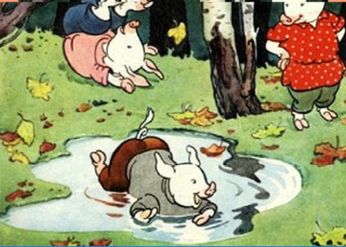

Лабораторная работа №19. Форматирование текста
в CSS_оформление и преобразование.
Декорирование текста
text-decoration
Даже имена у них были похожи.
Звали поросят: Ниф-Ниф,
Нуф-Нуф и Наф-Наф.(использовать span) text-decoration:
underline;
Все лето они кувыркались в зеленой
траве, грелись на солнышке, нежились в лужах.
(использовать span) text-decoration: overline;.
Но вот наступила осень.
(использовать span) text-decoration: line-through;
Перейти далее
(использовать ссылку)
text-decoration: inherit;
Определение направления вывода текста
direction
Порядок размещения столбцов таблицы
| 1 |
2 |
3 |
4 |
5 |
6 |
апрель |
март |
май |
|
июнь |
июль |
Отображение текста в блоке
ltr
- Пора нам подумать о зиме, - сказал как-то Наф-Наф
своим братьям, проснувшись рано утром. - Я весь
дрожу от холода. Мы можем простудиться. Давайте
построим дом и будем зимовать вместе под одной
теплой крышей.
Отображение текста в блоке
rtl
Но его братьям не хотелось браться за работу.
Гораздо приятнее в последние теплые дни гулять
и прыгать по лугу, чем рыть землю и искать тяжелые камни.
Принудительное направление отображения текста
unicode-bidi
normal - значение по умолчанию. Между
словами вставляется только по одному пробелу, дополнительные
пробелы отбрасываются. Текст переносится только в случае
необходимости.
div {direction: rtl; unicode-bidi: embed;}
- Успеется! До зимы еще далеко. Мы еше погуляем, - сказал
Ниф-Ниф и перекувыркнулся через голову.
- Когда нужно будет, я сам построю себе дом, - сказал Нуф-Нуф
и лег в лужу.
- Я тоже, - добавил Ниф-Ниф.
- Ну, как хотите. Тогда я буду один строить себе дом, - сказал
Наф-Наф. - Я не буду вас дожидаться.
div {direction: rtl; unicode-bidi: bidi-override;}
С каждым днем становилось все холоднее и холоднее. Но
Ниф-Ниф и Нуф-Нуф не торопились. Им и думать не хотелось о
работе. Они бездельничали с утра до вечера. Они только и делали,
что играли в свои поросячьи игры, прыгали и кувыркались.
- Сегодня мы еще погуляем, - говорили они, - а завтра с
утра возьмемся за дело.
арозА упал ан алапу азор А.
улип лешан ашеЛ пил У.
игород у дорого город удорог И.
ужяв ен икинев я жУ.
арген тинам анитнегрА.
ондив ен пал ин ,дром ин и - морднилап ,невид нО.
но невид и марх ан гел морозу зором ,легнахра мидивен оН.
лешан аполк еклоп ан ашеЛ.
янеС тарб ратс ен Я.
-Я, конечно, всех умней,
Всех уменй, всех умней!
Дом я строю из камней,
Из камней, из камней
Никакой на свете зверь,
Хитрый зверь, страшный зверь,
Не ворвется в эту дверь,
В эту дверь, в эту дверь!
Сергей Владимирович Михалков.
Три поросенка.
